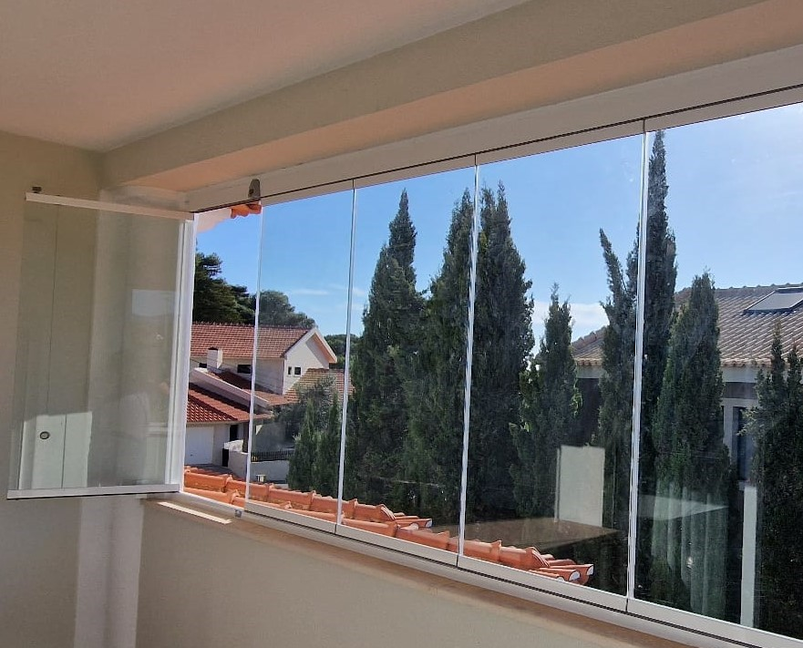

Endereço: Estrada dos Almocreves 309, 2120-210 Foros de Salvaterra
Criamos conforto
onde necessita estar !
O que nos torna
unicos ?
Design e Fabricação Própria
Criamos sistemas que superam as expectativas dos clientes mais exigentes. Oferecemos sistemas panorâmicos em vidro para terraços com design minimalista, facilidade de uso e uma durabilidade que você pode confiar.
Personalização Sem Limites
O que nos diferencia é a nossa capacidade de adaptação total a cada projeto. Não fazemos duas instalações iguais, garantindo que cada solução seja única para você.
Qualidade e Durabilidade Garantida
Como representantes da Acristalia asseguramos padrões europeus rigorosos e controles de qualidade intensos. Nossos produtos são testados para resistência e vêm com uma garantia de 5 anos.
Produtos
Comprometidos com
o Seu Projeto
Superar as expectativas dos nossos clientes é nossa missão. Com a qualidade e o design de nossos produtos, um preço competitivo no setor e um magnífico serviço pós-venda, somos o parceiro ideal para o seu negócio.
Mais Produtos, Mesma Excelência!
Além das soluções em destaque, oferecemos uma linha completa de produtos sobre medida - portas, janelas a projetos mais complexos.
Produzidos com vidros de alta qualidade, perfis resistentes e belos acabamentos que garantem durabilidade e elegancia.
Você define o estilo e transformamos sua ideia em realidade, com projetos personalizados que atendem exatamente ao que você precisa.

Qualidade de Vidros
Laminado: maior segurança e proteção contra impactos.
Temperado: resistência térmica e mecânica superior.
Espelhado: estética moderna com controle de privacidade.
Vidro duplo: isolamento térmico e acústico ideal para ambientes exigentes.
Caixarias sob medida
PVC: excelente vedação, durabilidade e conforto térmico.
Alumínio: estrutura leve, resistente e com acabamento refinado.
Distribuidor Oficial: